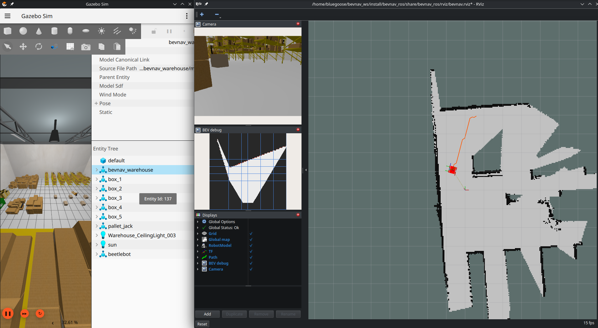

01 Featured · Simulation
BEVNav: camera-only indoor navigation
A ROS 2 navigation stack for a ground rover with one RGB camera on a pan joint and no range sensor. Each camera image becomes a bird's-eye-view occupancy grid that the rover plans and drives on, and keeps as a map of the space it has explored.
- Six-heading pan scan fused in log-odds into a 360° grid; every view feeds a persistent 50 × 50 m map.
- Cost map, greedy planner and 20 Hz pure-pursuit controller, with shortest-route sub-goals so the rover can back out of dead ends.
- Optional SegFormer-B0 floor segmentation, fine-tuned on data collected in simulation.
- BEV per frame
- 6.1 ms
- Floor mapped
- 92.6%
- Waypoints
- 9/9
- 360° scan
- 3.3 s